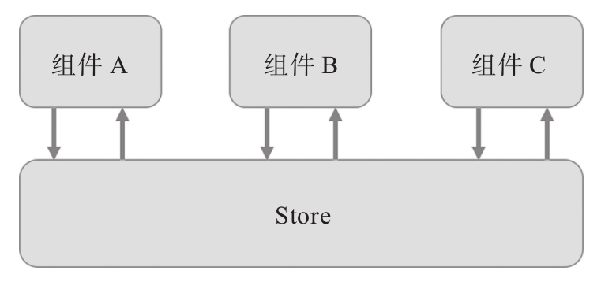
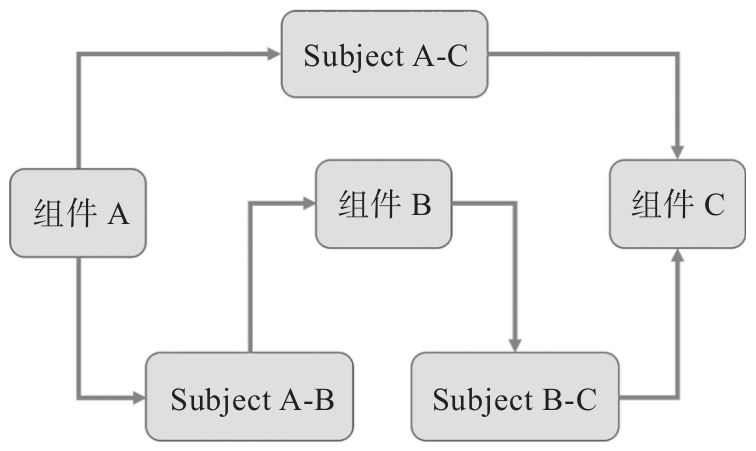

从RxJS可以很容易实现Redux这一点上可以看出，两者对应用状态的管理理念都是类似的，遵照的是响应式编程的原则。Redux把应用中的状态集中在Store中，这样方便实现组件之间的通信，状态管理的逻辑如图14-1所示。

图14-1 Redux的状态管理
从图中可以看到，每个组件都可以通过dispatch函数向Store发送action对象来修改状态，每个组件也可以通过调用Store的subscribe方法订阅状态的更新，从组件角度来看，数据也是被“推”给自己的，这和RxJS的响应式处理异曲同工。
当组件A需要向组件B发送消息，只需要确认在Store上哪个字段的状态用来通信，然后，从发送方组件A的角度要做的就是编写action creator和reducer函数，对应的就是react-redux中mapDispatchToProps引发的工作；从组件B的角度只需要根据推送的状态来重新渲染用户界面，对应的就是mapStoreToProps的工作。
只要有一个Store，就可以支持任意多组件之间的通信，这就是使用Redux架构的精妙之处。
如果为每两个需要通信的组件之间建立一独立同路，比如使用RxJS的Subject作为桥梁来沟通组件，那么对应的程序状态管理就如图14-2所示。
为了支持每一对组件之间一个方向的通信，就需要创建一个Subject对象，在图14-2中，只不过为了支持A到B、B到C、A到C的通信，就建立了3个Subject对象，在一个实际应用中需要通信的部分会更多，很容易造成Subject对象太多管理不过来。
当然，并不是说RxJS在管理数据方面不如Redux，只是说，对一个应用而言，管理全局数据用Redux这种方式更容易，RxJS完全也可以按照Redux一样的方式来使用，前面我们能够使用RxJS实现Redux，就是一个证明。

图14-2 利用RxJS Subject的状态管理
那么，既然RxJS可以很容易实现Redux，是不是就可以不使用Redux只用RxJS呢？理论上当然可以，不过，Redux有一个很成熟的社区，使用Redux可以获得很多开源世界的支持，最重要的是，Redux的DevTools非常有利于调试，而RxJS至今缺乏方便的调试工具，所以，最好的程序状态管理方法，是将Redux和RxJS结合，这就是我们接下来要介绍的工具Redux-Observable。